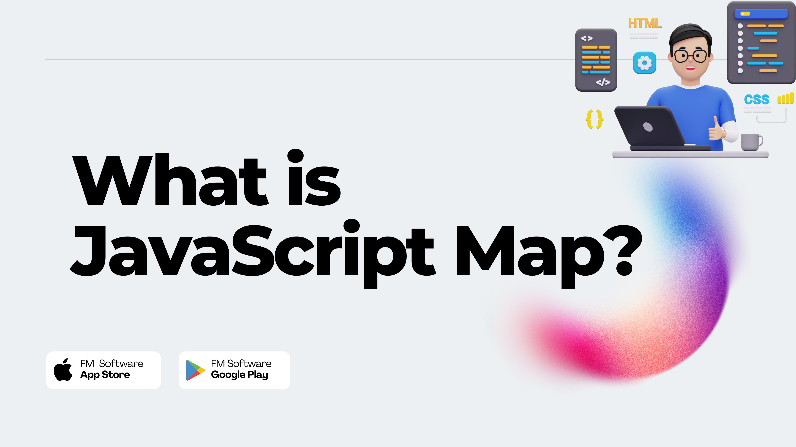
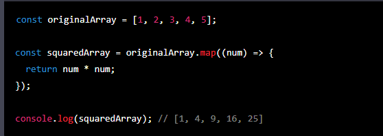
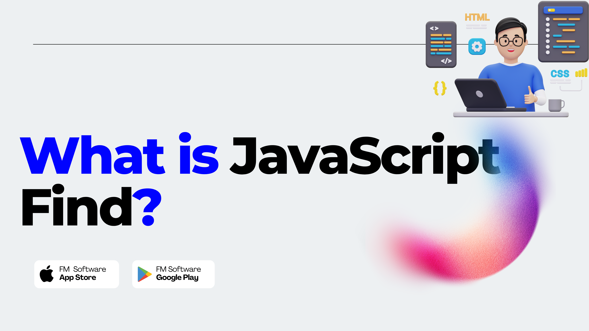
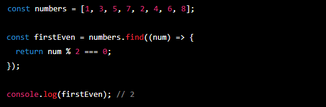
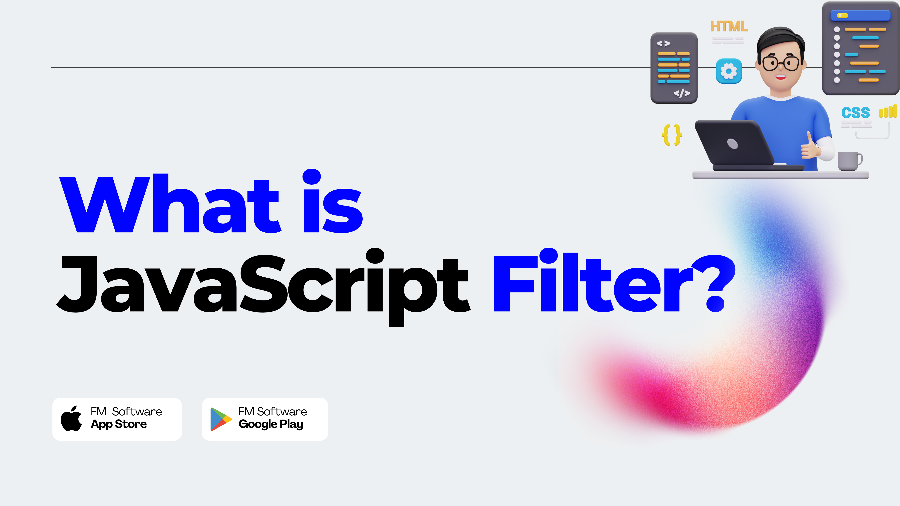
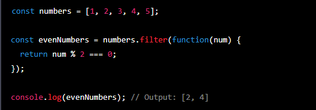
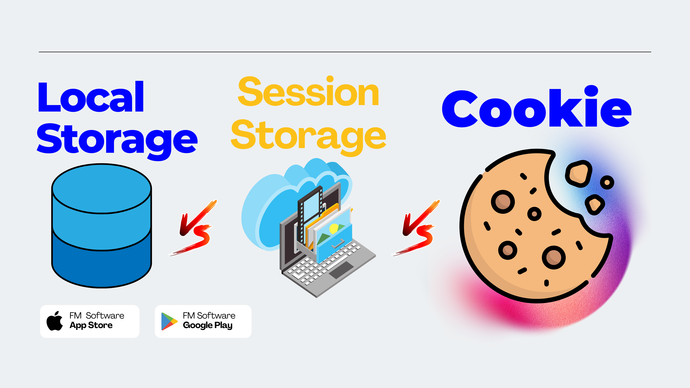
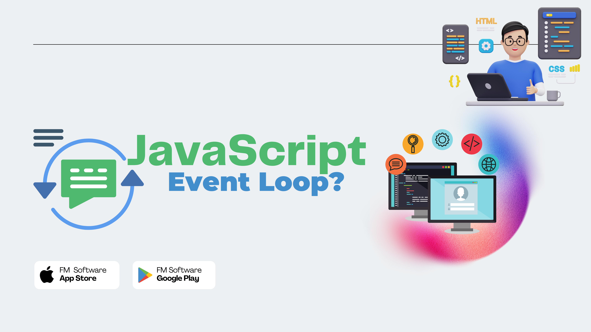
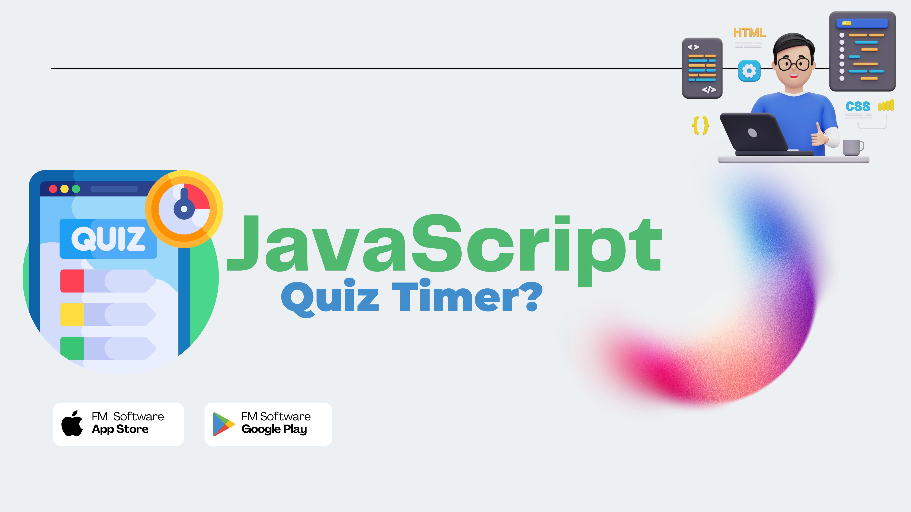
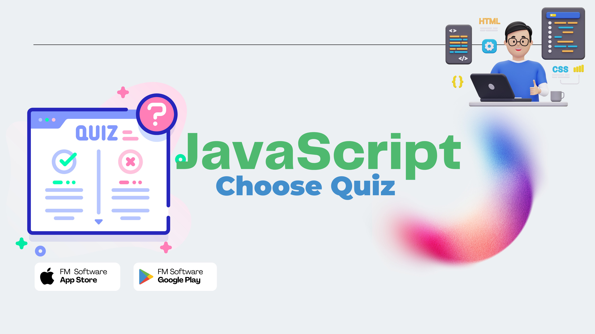

What is JavaScript map()?
JavaScript map() is a built-in method in JavaScript that allows you to iterate over an array and create a new array with the same length by manipulating each element in the original array. The map() method executes a callback function on each element of the array, and returns a new array with the same number of elements as the original array, but with each element transformed based on the logic of the callback function. Here is an example of using map() to create a new array with the squared values of each element in the original array:
In this example, the map() method iterates over each element of the originalArray and passes it to the callback function, which squares each element and returns the result. The resulting array is then assigned to squaredArray. map() can be a powerful tool for transforming arrays in JavaScript, and is commonly used in functional programming to perform complex operations on data.
What is JavaScript find()?
JavaScript find() is a built-in method in JavaScript that allows you to search an array for the first element that matches a specified condition, and returns that element. The find() method executes a callback function on each element of the array, and returns the first element for which the callback function returns true. If no element satisfies the condition, find() returns undefined. Here is an example of using find() to search for the first even number in an array:
In this example, the find() method searches the numbers array for the first element that is even, and returns that element. The callback function passed to find() checks whether each element is even by checking whether the element's remainder when divided by 2 is 0. find() can be a useful tool for finding specific elements in an array that meet certain criteria, and is commonly used in conjunction with other array methods like filter() and map().
What is JavaScript forEach()?
.png)
JavaScript forEach() is a built-in method in JavaScript that allows you to loop over an array and execute a function on each element of the array. The forEach() method executes a callback function on each element of the array. Unlike the map() and filter() methods, forEach() does not create a new array - it simply iterates over the original array and executes the callback function on each element. Here is an example of using forEach() to log each element in an array:

In this example, the forEach() method loops over each element of the numbers array and executes the callback function, which logs the value of each element to the console. forEach() can be a useful tool for performing operations on each element of an array, such as updating an HTML element or calculating a sum. However, it is important to note that forEach() does not return a value, so it cannot be used to create a new array or filter an existing one.
What is JavaScript filter()?
The JavaScript filter() method is used to create a new array with all elements that pass the test implemented by the provided function. It takes a callback function as its argument, which is executed for each element in the original array. The callback function should return true if the element should be included in the new array or false if it should be excluded. Here's an example usage of the filter() method:
In this example, the filter() method is used to create a new array evenNumbers that only includes the even numbers from the original array numbers. The callback function passed to filter() checks if each number in numbers is divisible by 2 with no remainder, and returns true if it is. The resulting array evenNumbers contains only the numbers 2 and 4. The filter() method does not modify the original array, but instead returns a new array with the filtered elements. If no elements pass the test implemented by the callback function, an empty array will be returned.
What is JavaScript Local Storage, Session Storage, and Cookies?
Local Storage, Session Storage, and Cookies are all used for client-side storage of data, but they differ in their functionality and usage.
Local Storage: Local Storage is a web API that allows you to store data in the browser's storage for a longer period of time. Data stored in Local Storage persists even after the browser is closed and reopened. Local Storage is accessible across tabs and windows within the same domain. It can be used to store larger amounts of data than Cookies and can store data in key-value pairs.
Session Storage: Session Storage is similar to Local Storage, but the data stored in Session Storage is available only during the current browser session. When the user closes the browser or tab, the data stored in Session Storage is lost. Session Storage is accessible across tabs and windows within the same domain, and it can also store data in key-value pairs.
Cookies: Cookies are small text files that are stored on the user's computer by the browser. Cookies can be used to store small amounts of data, typically less than 4KB, and are sent to the server with every request. Cookies can be set to expire after a specific time or when the user closes the browser. Cookies can be used to store user preferences, login credentials, and other data.
What is JavaScript event loop?
The JavaScript event loop is a fundamental concept that governs how JavaScript executes code in a single-threaded environment. It's responsible for managing the execution of code in a non-blocking manner, allowing the browser to remain responsive to user interactions. When JavaScript code is executed, it's executed in a single thread, which means that only one piece of code can be executed at a time. The event loop is responsible for handling events and callbacks by queuing them up in a message queue, and executing them one by one in the order they were received.
The event loop consists of two main components:
The Call Stack: The call stack is a data structure that stores function calls in the order they're received. Whenever a function is called, it's added to the top of the call stack. When a function returns, it's removed from the top of the call stack.
The Message Queue: The message queue is a data structure that stores events and callbacks. Whenever an event or callback is triggered, it's added to the back of the message queue. The event loop is constantly checking the message queue, and when the call stack is empty, it takes the first event or callback from the front of the queue and adds it to the call stack for execution
What is JavaScript Quiz Timer?
A Quiz Timer in JavaScript is a feature that can be added to a quiz or test to limit the amount of time a user has to complete the quiz. It can be implemented using the built-in JavaScript setTimeout() or setInterval() functions. The timer can be displayed on the webpage in various formats, such as a countdown clock or a progress bar. When the timer reaches zero, the quiz is automatically submitted, and the user is notified of their results. A Quiz Timer can be a useful tool for testing a user's knowledge under pressure or for creating timed assessments in educational settings.
What is JavaScript chooseQuiz function?
The chooseQuiz function in the provided code is a custom function that takes in two arguments - index and givenAns. It performs the following steps:
It first checks if an answer object for the current quiz already exists in the answers array by using the find method to search for an answer object with the same id property as the current quiz. If an answer object is found, it means that the user has already answered this quiz before and the answer needs to be updated in the answers array.
If an answer object already exists for the current quiz, the function loops through the answers array using a for...of loop to find the index of the answer object with the same id property as the current quiz. Once the index is found, the function updates the answer object by using the splice method to replace the old answer object with a new answer object that includes the current quiz and the user's new answer.
If an answer object does not already exist for the current quiz, the function adds a new answer object to the answers array that includes the current quiz and the user's answer.
The displayAnswers function is then called, passing in the updated answers array as an argument. The displayAnswers function is not provided in the code you have shared, but it likely updates the UI to display the user's answers in some way. Overall, the chooseQuiz function is used to update the answers array with the user's answers as they progress through the quiz.